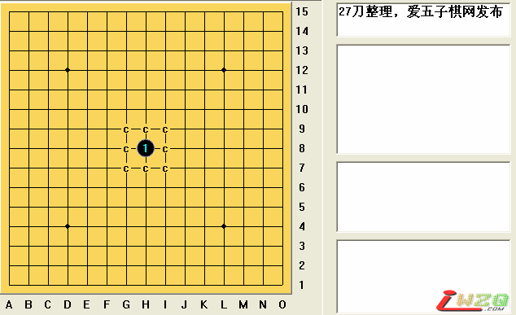

花浦大全lib下载
#1 花浦大全lib下载 作者：有志青年 发表时间：2009-3-10 21:28:08

#2 Re:花浦大全lib下载 作者：刀魂 发表时间：2009-3-11 9:48:01
谢谢 分享！！！［ 许相公 于 2009-12-1 10:09:04 时花20金币送鲜花一朵］
#3 Re:花浦大全lib下载 作者：连珠小小鸟 发表时间：2009-3-11 19:09:00
#4 Re:花浦大全lib下载 作者：二十七刀 发表时间：2009-3-14 21:46:48
提醒有志,27刀制作
#5 Re:花浦大全lib下载 作者：山寨手机 发表时间：2009-3-16 21:18:46
二十七刀 的东西怎么来这里啦？#6 Re:花浦大全lib下载 作者：丝袜伯爵 发表时间：2009-3-25 10:28:32
本人最近正在研究浦月必胜，多谢楼主了
#7 Re:花浦大全lib下载 作者：来客沙丝 发表时间：2009-3-25 19:47:55
下载了，是乱码。不会用啊。
#8 Re:花浦大全lib下载 作者：海梦 发表时间：2009-5-22 22:44:18
我们是初学者……打谱打到底，到黒杀啊……看不懂#9 Re:花浦大全lib下载 作者：海梦 发表时间：2009-5-22 22:44:31
我们是初学者……打谱打到底，到黒杀啊……看不懂#10 Re:花浦大全lib下载 作者：冷面孤煞 发表时间：2009-5-22 23:34:24
 我倒
我倒
#11 Re:花浦大全lib下载 作者：滴水穿石 发表时间：2009-7-8 9:48:28
非常感谢，正想找花月浦月必胜谱呢。
#12 Re:花浦大全lib下载 作者：合纵连横 发表时间：2009-7-20 21:17:45
我还是个初学者#13 Re:花浦大全lib下载 作者：亦可 发表时间：2009-7-21 9:34:00
我打开的也是乱码#14 Re:花浦大全lib下载 作者：亦可 发表时间：2009-7-21 9:35:18
有谁能告诉我怎么解决#15 Re:花浦大全lib下载 作者：起航 发表时间：2009-8-15 17:34:26
呵呵，拿回去学学。#16 Re:花浦大全lib下载 作者：初学者零幺 发表时间：2009-9-5 12:06:29
到底怎么打开那个文件···网上说的都看不懂#17 Re:花浦大全lib下载 作者：真心想学习 发表时间：2009-9-7 9:08:28
妙！太有学习价值了。感谢！
#18 Re:花浦大全lib下载 作者：雪儿老公 发表时间：2009-11-12 0:51:49
下载完，不知道怎么用，哪位朋友说说怎么用，谢谢了。#19 Re:花浦大全lib下载 作者：梁智祥 发表时间：2009-11-12 19:59:21
如何打开LIB文件
#20 Re:花浦大全lib下载 作者：像傻瓜一个的笨蛋 发表时间：2009-11-15 21:30:19
我下载了之后用连珠终结者打开，就像楼主显示的图那样，那接下去的谱！我怎么看呢？？？#21 Re:花浦大全lib下载 作者：伍迪 发表时间：2009-11-30 9:56:48
好极品的东东 初学者 研究初级花蒲中#22 Re:花浦大全lib下载 作者：二十七刀 发表时间：2009-12-1 18:53:58
是很极品，做到了最起码3个打点的地毯，一般都做了4个打点的地毯。变化比较多。通不少必胜的下法。#23 Re:花浦大全lib下载 作者：轻雨飞扬 发表时间：2009-12-11 11:12:15
初学者下载后，解压缩形成一个带后缀.LIB的文件，这个文件用一个叫做连珠终结者的软件可以打开，打开后，如果想看后面的变化，只需在棋盘上点一下最后一手黑子或白子点一下就可以了。另外使用高级版RELIB软件（3.5版本以上）也可以打开，不过由于此文件过于巨大，所以打开的速度要慢一些，多点耐心，这个软件在软件区有下载的，打开后，要看每一步变化，仍然照着最后一手黑子或白子点一下，后面黑子或白子就会出现下一步走哪里，不知我讲的，初学者可看得懂？#24 Re:花浦大全lib下载 作者：与狼共舞啊 发表时间：2009-12-25 20:55:55
我们是初学者……打谱打到底，到黒杀啊……看不#25 Re:花浦大全lib下载 作者：与狼共舞啊 发表时间：2009-12-25 22:35:47
你们好
#26 Re:花浦大全lib下载 作者：水龙吟 发表时间：2010-2-25 23:13:13
学习中，谢谢楼主#27 Re:花浦大全lib下载 作者：自然偌 发表时间：2010-4-5 18:02:05
怎么用啊。我是新手#28 Re:花浦大全lib下载 作者：白合花 发表时间：2010-4-8 18:36:23
谢谢 无私奉献 先下载学习一下
#29 Re:花浦大全lib下载 作者：赛欧拉 发表时间：2010-5-4 17:50:02
请问大家lib文件的格式是什么？我想用自己的程序去读lib文件。我现在大概看明白了这些：前20个字节是文件头，FF 52 65 6E 4C 69 62 FF 03 00 FF FF FF FF FF FF FF FF FF FF。之后是每步的放子位置，如果他后面的是00，表示没有分支，如果不是00，就是有几个分支。现在我就是对这些分支是什么表示的不明白。放子后面的那个字节表示什么意思？#30 Re:花浦大全lib下载 作者：冷血动物五子 发表时间：2010-5-8 9:03:11
太好了，谢谢分享。#31 Re:花浦大全lib下载 作者：圊籽 发表时间：2010-6-9 11:24:30
 找到了，先下载慢慢看
找到了，先下载慢慢看
#32 Re:花浦大全lib下载 作者：刘名字 发表时间：2011-1-9 22:51:36
新手入门，谢谢楼主 ！！！#33 Re:花浦大全lib下载 作者：华硕 发表时间：2011-1-31 23:06:27
谢谢楼主提供！#34 Re:花浦大全lib下载 作者：翱翔的鱼 发表时间：2011-2-12 11:24:02
谢谢老师分享